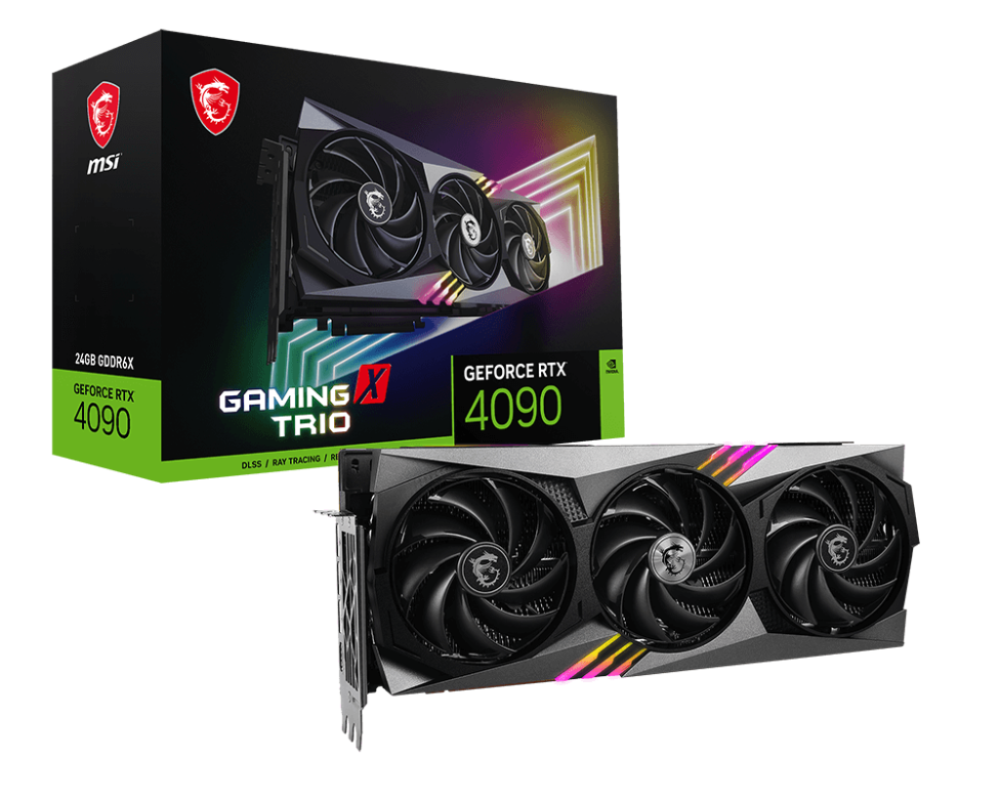
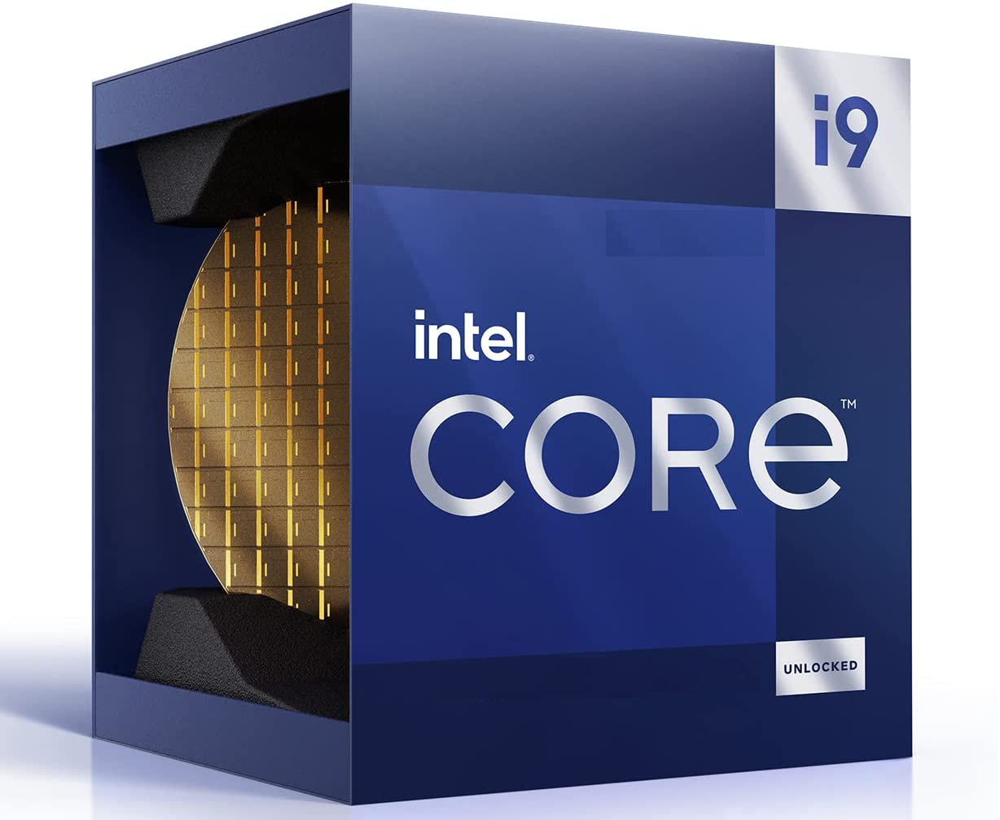

Best GPUs and CPUs
Trying to find the best of the best but don't know were to look? want to find the best part options with the limited budget you currently have? this page will cover the top 3 GPUs and CPUs by performance (ordered) as well as the best budget GPUs/CPUs (unordered).
- RTX 4090
-
The RTX 4090 is based on Nvidia’s Ada Lovelace architecture. It features 16,384 cores with base / boost clocks of 2.2 / 2.5 GHz, 24 GB of memory, a 384-bit memory bus, 128 3rd gen RT cores, 512 4th gen Tensor cores, DLSS 3 and a TDP of 450W. Performance gains will vary depending on the specific game and resolution. With a 4090 tier card 1080p in-game fps will often get CPU bottlenecked which prevents the GPU from delivering higher fps. At higher (often sub-optimal) resolutions (1440p, 4K etc) the 4090 will show increasing improvements compared to lesser cards. When fps are not CPU bottlenecked at all, such as during GPU benchmarks, the 4090 is around 75% faster than the 3090 and 60% faster than the 3090-Ti, these figures are approximate upper bounds for in-game fps improvements. The fact that the 4090 is currently the fastest performing graphics card available is reflected in its jaw-dropping MSRP of $1,600.
- RTX 4080
- The Nvidia GeForce RTX 4080 is the follow-up to the RTX 4090 launch.It features 9,728 cores with base / boost clocks of 2.2 / 2.5 GHz, 16 GB of memory, a 256-bit memory bus, 76 3rd gen RT cores, 304 4th gen Tensor cores, DLSS 3 and a TDP of 320W. Performance gains will vary depending on the specific game and resolution. With a 4080 tier card 1080p in-game fps will often get CPU bottlenecked which prevents the GPU from delivering higher fps. At higher (often sub-optimal) resolutions (1440p, 4K etc) the 4080 will show increasing improvements compared to lesser cards. When fps are not CPU bottlenecked at all, such as during GPU benchmarks, the 4080 is around 50% faster than the 3080 and 25% faster than the 3090-Ti, these figures are approximate upper bounds for in-game fps improvements. The 4080 has an MSRP of $1,200 USD.
- AMD Radeon RX 7900 XTX
- The Radeon RX 7900 XTX is an enthusiast-class graphics card by AMD, launched on November 3rd, 2022. Built on the 5 nm process, and based on the Navi 31 graphics processor, in its Navi 31 XTX variant, the card supports DirectX 12 Ultimate. This ensures that all modern games will run on Radeon RX 7900 XTX. Additionally, the DirectX 12 Ultimate capability guarantees support for hardware-raytracing, variable-rate shading and more, in upcoming video games. The Navi 31 graphics processor is a large chip with a die area of 529 mm² and 58,000 million transistors. It features 6144 shading units, 384 texture mapping units, and 192 ROPs. The card also has 96 raytracing acceleration cores. AMD has paired 24 GB GDDR6 memory with the Radeon RX 7900 XTX, which are connected using a 384-bit memory interface. The GPU is operating at a frequency of 1855 MHz, which can be boosted up to 2499 MHz, memory is running at 2500 MHz (20 Gbps effective).
- AMD Radeon RX 6600 XT
- The Radeon RX 6600 XT is a performance-segment graphics card by AMD, launched on July 30th, 2021. Built on the 7 nm process, and based on the Navi 23 graphics processor, in its Navi 23 XT variant, the card supports DirectX 12 Ultimate. This ensures that all modern games will run on Radeon RX 6600 XT. Additionally, the DirectX 12 Ultimate capability guarantees support for hardware-raytracing, variable-rate shading and more, in upcoming video games. The Navi 23 graphics processor is an average sized chip with a die area of 237 mm² and 11,060 million transistors. It features 2048 shading units, 128 texture mapping units, and 64 ROPs. The card also has 32 raytracing acceleration cores. AMD has paired 8 GB GDDR6 memory with the Radeon RX 6600 XT, which are connected using a 128-bit memory interface. The GPU is operating at a frequency of 1968 MHz, which can be boosted up to 2589 MHz, memory is running at 2000 MHz (16 Gbps effective).
- RTX 3050
- The RTX 3050 is built on NVIDIA’s Ampere architecture. It marks the first time that ray-tracing has been available on an entry level (50-series) card. Second generation ray tracing cores can be switched on for more realistic light simulation, albeit at a hit to performance. The 3050 features 2560 CUDA cores, a boost clock frequency of 1.78 GHz, 8 GB of the latest GDDR6 memory and NVIDIA’s DLSS. DLSS technology uses the 3050’s tensor cores to scale up resolutions whilst maintaining high frame rates and without losing significant image quality. The 3050 also includes an encoder (NVENC) for sharper images and smoother capture whilst recording/streaming.
- Radeon RX 6600
- The Radeon RX 6600 is a performance-segment graphics card by AMD, launched on October 13th, 2021. Built on the 7 nm process, and based on the Navi 23 graphics processor, in its Navi 23 XL variant, the card supports DirectX 12 Ultimate. This ensures that all modern games will run on Radeon RX 6600. Additionally, the DirectX 12 Ultimate capability guarantees support for hardware-raytracing, variable-rate shading and more, in upcoming video games. The Navi 23 graphics processor is an average sized chip with a die area of 237 mm² and 11,060 million transistors. Unlike the fully unlocked Radeon RX 6650 XT, which uses the same GPU but has all 2048 shaders enabled, AMD has disabled some shading units on the Radeon RX 6600 to reach the product's target shader count. It features 1792 shading units, 112 texture mapping units, and 64 ROPs. The card also has 28 raytracing acceleration cores. AMD has paired 8 GB GDDR6 memory with the Radeon RX 6600, which are connected using a 128-bit memory interface. The GPU is operating at a frequency of 1626 MHz, which can be boosted up to 2491 MHz, memory is running at 1750 MHz (14 Gbps effective).
- Intel Core i9-13900K
- The Intel Core i9-13900K is a desktop processor with 24 cores, launched in September 2022. It is part of the Core i9 lineup, using the Raptor Lake architecture with Socket 1700. Thanks to Intel Hyper-Threading the core-count is effectively doubled, to 32 threads. Core i9-13900K has 36MB of L3 cache and operates at 3 GHz by default, but can boost up to 5.8 GHz, depending on the workload. Intel is building the Core i9-13900K on a 10 nm production process, the transistor count is unknown. You may freely adjust the unlocked multiplier on Core i9-13900K, which simplifies overclocking greatly, as you can easily dial in any overclocking frequency. With a TDP of 125 W, the Core i9-13900K consumes a lot of power, so good cooling is definitely needed. Intel's processor supports DDR4 and DDR5 memory with a dual-channel interface. ECC memory is supported, too, which is an important capability for mission-critical systems, to avoid data corruption. For communication with other components in the computer, Core i9-13900K uses a PCI-Express Gen 5 connection. This processor features the UHD Graphics 770 integrated graphics solution.
- Intel Core i7-13700K
- The Intel Core i7-13700K is a desktop processor with 16 cores, launched in September 2022. It is part of the Core i7 lineup, using the Raptor Lake architecture with Socket 1700. Thanks to Intel Hyper-Threading the core-count is effectively doubled, to 24 threads. Core i7-13700K has 30MB of L3 cache and operates at 3.4 GHz by default, but can boost up to 5.4 GHz, depending on the workload. Intel is making the Core i7-13700K on a 10 nm production node, the transistor count is unknown. You may freely adjust the unlocked multiplier on Core i7-13700K, which simplifies overclocking greatly, as you can easily dial in any overclocking frequency. With a TDP of 125 W, the Core i7-13700K consumes a lot of power, so good cooling is definitely needed. Intel's processor supports DDR4 and DDR5 memory with a dual-channel interface. ECC memory is supported, too, which is an important capability for mission-critical systems, to avoid data corruption. For communication with other components in the computer, Core i7-13700K uses a PCI-Express Gen 5 connection. This processor features the UHD Graphics 770 integrated graphics solution.

- Intel Core i5-13400
- The Intel Core i5-13400 is a desktop processor with 10 cores, launched in January 2023. It is part of the Core i5 lineup, using the Raptor Lake architecture with Socket 1700. Thanks to Intel Hyper-Threading the core-count is effectively doubled, to 16 threads. Core i5-13400 has 20MB of L3 cache and operates at 2.5 GHz by default, but can boost up to 4.6 GHz, depending on the workload. Intel is making the Core i5-13400 on a 10 nm production node, the transistor count is unknown. The multiplier is locked on Core i5-13400, which limits its overclocking potential. With a TDP of 65 W, the Core i5-13400 consumes typical power levels for a modern PC. Intel's processor supports DDR4 and DDR5 memory with a dual-channel interface. For communication with other components in the computer, Core i5-13400 uses a PCI-Express Gen 5 connection. This processor features the UHD Graphics 730 integrated graphics solution.

Below is the list of of some gpus' framerate across 8 different AAA games which are: Borderlands 3 (DX12), Far Cry 6 (DX12), Flight Simulator (DX11/DX12), Forza Horizon 5 (DX12), Horizon Zero Dawn (DX12), Red Dead Redemption 2 (Vulkan), Total War Warhammer 3 (DX11), and Watch Dogs Legion (DX12). The fps score is the geometric mean (equal weighting) of the eight games.
| Graphics card | 1080p Ultra | 1080p Medium | 1440p Ultra | 4K Ultra |
|---|---|---|---|---|
| GeForce RTX 4090 | 100.0% (147.8fps) | 100.0% (186.9fps) | 100.0% (143.1fps) | 100.0% (116.0fps) |
| Radeon RX 7900 XTX | 96.1% (142.0fps) | 94.7% (177.0fps) | 91.9% (131.5fps) | 81.8% (94.8fps) |
| GeForce RTX 4080 | 95.6% (141.3fps) | 97.8% (182.7fps) | 90.9% (130.1fps) | 78.7% (91.2fps) |
| Radeon RX 6600 XT | 52.8% (78.0fps) | 73.1% (136.5fps) | 38.4% (54.9fps) | - |
| Radeon RX 6600 | 45.1% (66.7fps) | 63.0% (117.8fps) | 32.2% (46.1fps) | - |
| GeForce RTX 3050 | 34.8% (51.4fps) | 47.8% (89.4fps) | 26.3% (37.6fps) | - |